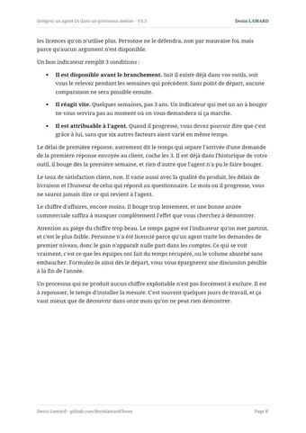
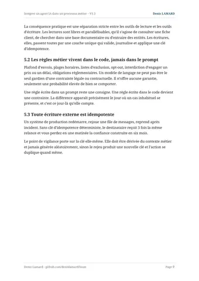
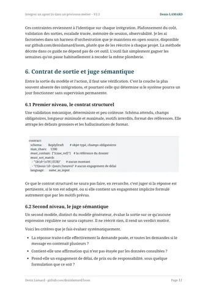

Intégrer un agent IA dans un processus métier
Critères d'éligibilité, architecture, déploiement progressif et conformité.
Les projets d'agents s'arrêtent rarement en démonstration. Ils s'arrêtent entre la démonstration et la production, sur une branche du processus que personne n'avait cartographiée. Ce guide déroule la méthode que j'applique avant d'écrire la première ligne de code : trancher entre un agent et un workflow, noter le processus sur quatre critères, poser la vérification de sortie, puis monter en autonomie sur des chiffres. Le fil conducteur est une boîte mail partagée, parce que toutes les organisations en ont une et que le cas se transpose à la relance commerciale comme au tri de tickets.
« Presque aucune de ces défaillances ne relève de la qualité du modèle. Elles relèvent toutes de l'ingénierie qu'on met autour. »
§ 10 · Ce qui casse en production
Ce que vous y trouverez
- Le test qui tranche entre un agent et un workflow : peut-on énumérer les branches du processus ?
- Une grille d'éligibilité notée de 0 à 3 sur le volume, la valeur unitaire, la réversibilité et la mesurabilité, appliquée à trois processus courants.
- Le déploiement en quatre marches, du mode shadow à l'autonomie, avec les seuils chiffrés de passage.
- Sept défaillances de production et leur parade, les points RGPD à traiter en amont, et seize points de checklist avant ouverture sur le flux réel.
Aperçu


